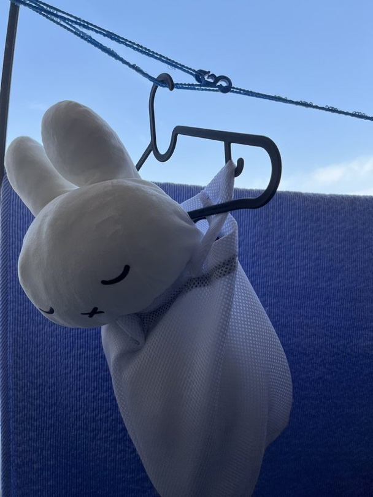
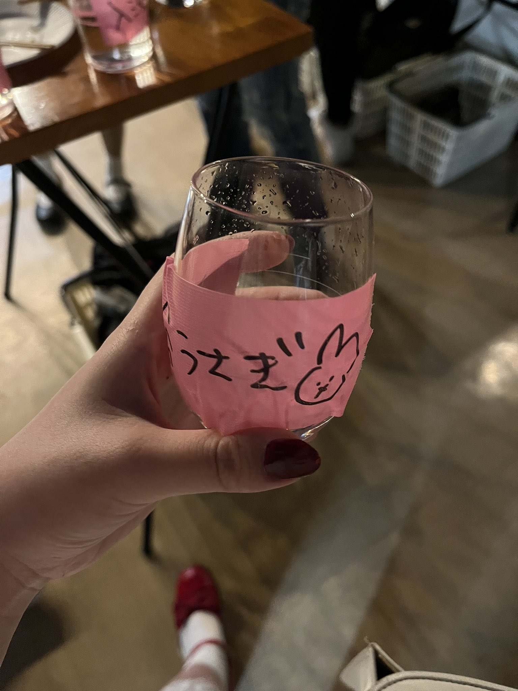
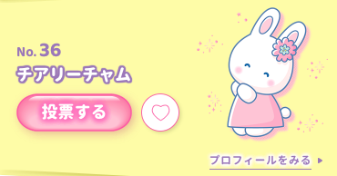
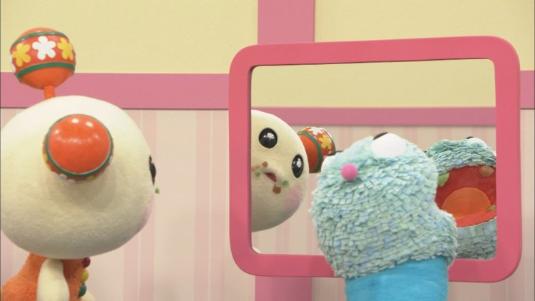

2022.07.13
入浴日記
 一昨日からすごぶる体調が悪く、1日のうち20時間は寝ていて、残りの四時間はマインクラフトという生活を送っていましたが、今日の午後目覚めると突然元気になっていました。
入浴は体調が崩れるととにかく寝まくるので、それを改めてきたいです。
昨日の夜は結構な雨が降っていたのですが、午後に起きると病んでいたので、お買い物がてら雨上がりを散歩しました。
入浴は自由が丘というところに住んでいるので、おさんぽ環境には恵まれています。一回のおさんぽで、いろんな犬と母と子供とお年寄りの方とすれ違います。
気温も湿気っぽくはあるけど蒸し暑くはなかったので、今日はみなさん気分が良さそうに見えました。入浴の気分が良かったからそう見えたのかもしれません。
スーパーの前でばあちゃんが自転車にのるときのかわいくて小さな掛け声、「よいしょ」が聞けたので良かったです。入浴はこういう誰のためでもないふいの言葉を盗み聞きするのが好きです。
東京に来てからしばらく乗ってませんが、入浴は自転車で都市型公園を突っ切って帰るのが好きでした。あとスケートボードも好きです。クルージングが好きなんだと思います。
車も好きだけどあいにく免許は持っていません。自由が丘は入浴よりちょっと年上の、特別おめかししているわけでもない普通のお姉さんが軽トラ感覚でBMWなんかに乗っているので、かっこいいです。
あとかわいいおじいちゃんはドイツ車にのってる確率が高い気がします。
入浴の実家はおばあちゃんがレクサス、パパがアメ車好きでサバーバン、あとは家業の四トントラックと軽トラという狂った車ラインナップだったので、自由が丘の人たちはちゃんと生活に沿った車に乗っててすごいと思います。
入浴も今は徒歩と自転車とスケボーしか乗れませんが、いつか意味わかんない燃費最悪の激渋クラシックオープンカーと軽トラに乗りたいです。ハートのサングラスとかつけて。
自由が丘に住んで結構たちますが、自由が丘の30歳になる自分がまったく想像できなくて、むしろオハイオとかで無免許でホンダの軽トラ乗ってる自分の方が想像つきます。不思議なものです。
今日のばんごはんはおうち焼肉です。気合い入れていきます。
2022.07.04
2022年上半期おわった
 上半期ってか六月はなんだかんだいろいろやりました。そのぶん入浴サイトの更新をさぼっていました。
入浴活動としてやったこと
🐰入浴うさぎしーるつくりました
🐰うさぎ天国というパーティーをしました
🐰六月だけで４回も現場でDJしました
特にうさ天はツーフロアのオーガナイズだったので、大変でした。DJの数が多いほど連絡が大変です。
でも出演してくれたDJとたのしいゲストさんたちのおかげで、すごく楽しいパーティーになりました。フライヤーも素敵に作ってもらいました。
入浴は一体感とか同調圧力が苦手なのに人が好きな厄介な性格なので、人がなぜか同じ場所に集まって各位自由行動をしている様が好きです。だれも迫害しないために迫害するべき人を迫害しまくって、拓かれていて守られている場所を作りたいです。
音はもちろん一番大切だけど、できるだけいろんな世代のいろんな界隈の人を呼びたいなあとおもってブッキングするのですが、なかなかむずかしい。
あとお客さんを呼ばなくてもすごくいいDJをする人がいいなと思うのだけど、そういうはウォーリーなので見つけるのが大変です。
集客は入浴がやればいいだけですが入浴もそんなに顔広くないし、何より体力もなく夜は家でゆっくりしたいタイプなのでそこもなかなか。でも入浴のパーティーはお客さんが「楽しいところがある！」とみんな連れてきてくれるので、つよいです。お客さんってかんじもしなくて共犯者なかんじです。
入浴が音楽厄介おばさんなので難しいとこではありますが、DJのお客さんがDJなの焼畑農業じみてるなと思うことがあって。
音楽厄介パーソンのみなさんは音が良ければそれだけで楽しいかもだけど、それってけっこうニッチな需要な気もする。
いつもハウスで爆踊りpatio皆勤賞のぱてぃおきっずがこの間、「ハウスってなに？」と言っていてハウゴリがにこにこしていました。「ここに行けば楽しい音楽が流れてる！」って場所があるのに、音のジャンルの名前なんかまじでどうでもいいっすね。
そんなかんじで下半期も「たのしいな！」なかんじでがんばりつつ、生活リズムの調整もがんばっていきたいです🐰
2022.04.16
チアリーチャムに清き一票を
 今年もついにサンリオキャラクター大賞の時がきました。
入浴の一番好きなキャラクターはミッフィーなのですが、ミッフィーと比べて有機のかんじがするサンリオではチアリーチャム、ニャニィニュニェニョンあたりが、やはりサンリオの中でもシンプルで良いです。
そういえば今の恋人が、「私の容姿を褒めろ」という入浴の恐喝に対して「情報量が少ないから脳が疲れない」と言っていました。入浴は脳に優しい容姿をしていて、脳に優しいキャラクターが好きです。
入浴は暇さえあればどうにもならないことについて考えたり妄想したりしているので、脳が疲れやすいのだと思います。
しかも入浴は定職にも就いていないので、人生のほとんどが忙しくないフリータイム。入浴うさぎで考え中に過ごしています。
入浴は哲学や宗教が好きで、でもどっちかってっとそれらは文化人類学的な物の見方に使っていて、なんかやっぱ客観だから、同じように哲学や宗教が好きな人たちと相性がよくないんだなぁとこの頃思います。
自分以外に客のいないよくわからん喫茶店に逃げ込んでピース吸ってフィッシュマンズ聞いて村上春樹読んでるとある男の子（こんな子イマドキ都内にいるんだ〜と思ってたら嫌われちゃってた）に言い訳すると、 入浴もべつにずっと前からこういうまっすぐ客観で斜に構えた主観の人たちを見てたわけじゃないということなんだけど、やっぱ入浴は、煙草はやめちゃったし喫茶店でコーヒー淹れてくれるおじいちゃんと仲良くなるしフィッシュマンズは洗濯干してるときに口ずさむし村上春樹は嫌いだったりで、
そもそもの相性が悪いというか、やっぱ自分の孤独みたいなのを煮詰めすぎてる人にとってはどうしても敵に見られやすいきらいがあります。
サブカルとかアンダーグラウンドとかって秘密感とか閉鎖性の上で成り立つものなんでしょうけど、もう入浴がいるだけで🌷なかよしスペース🌷なかんじしますもんね。
自分がお金ぶっこんで楽しんでるサブカルの横で、入浴はちゃっかり文筆業だったり文化風味なお仕事でお金稼いでて、消費者目線じゃないとこがいけすかないのかもしれません。
入浴は「芸術とか自己表現とかそういう高尚ちっくなものを、高尚な体をを保ったまま換金する」みたいなところに面白さを感じるので、入浴自身のプレイヤーとしての技術や知識は入浴の換金審美眼を養う程度で結構なのです。
あとは認知の分母を上げたり、プランディングして遊ぶのが楽しいです。アウトプットが外向きなんですね、入浴は。
でも入浴のこと敵にしちゃいがちな人たちって、ほんとうになんか笑っちゃうくらい自分の特権みたいなのを信じてて潔癖で、喫茶店もピースもフィッシュマンズも村上春樹も、全部自分だけのものじゃないとだめっぽい。
入浴は自己プロデュースが趣味なので、素敵な喫茶店も素敵な曲も素敵な小説もいっぱい知っているのに、毎年サンリオキャラクター大賞のチアリーチャムへの投票を呼びかけたりしちゃいます。そこらへんがサブカルボーイの理想とずれちゃうんだろうなぁ。
男の子の方が案外そこらへんロマンチックにできている気がするのは、女の子に比べて男の子って公共的に見られてジャッジされることに慣れてないからだと思います。うーん、でもどうなんだろう。こういう人間関係は24歳になってもというより、やっぱり24歳なりの難しさがありますね。
春は案外雨が降るので昨日も一昨日も雨でしたが、今日は晴れるみたいなので洗濯をするのが楽しみです。
2022.03.29
クッキーをやろう
 やっぱこう、クラブカルチャーの中で夜遊びしてると、日本入浴観測範囲内でもたまーに「それ、違法じゃーん」みたいな嗜好品が出回ってたりします。
入浴のやっているハウスというジャンルはわりと安全なのですが、たまにふらっと適当なジャンルのイベントに行ったりすると、まだまだそういうのありますね。
まあでも楽しく音楽が聴きたい！ってのは入浴も常々思っていて、実際おうちではよくスクロースが配合されたものを好んで嗜みながら踊ったりしてますし、なによりスクロースはまだ日本の法律では合法なので、ここでみなさんにおすすめしておきます。
スクロースはグルコースとフルクトースが結合したもので、若干の依存性が確認されてますが、安価なのに効き目はドーパミンもセロトニンもばっちり出まくるという、恐ろしいものであります。
スクロースをそのまま経口摂取するのも味気ないので、今回は入浴のオリジナルレシピの「クッキー」を紹介しますね。
🐰材料（グラム）🐰
塩化ナトリウムが含まれていない常温のバター 180
スクロース 100
鶏卵 40
タンパク質割合が8.5%以下の小麦粉 290
アーモンドプードル 40
🐰作り方🐰
１,塩化ナトリウムが含まれていない常温のバターとスクロースを泡立て器で混ぜる。空気を含ませ白っぽくなればOK。（ポマード状）
２,溶いた鶏卵を加え馴染ませる。
３,ふるったタンパク質割合が8.5%以下の小麦粉とアーモンドプードルを加えゴムベラでさっくりと混ぜる。
４,生地がまとまってきたら好みの形に形成し、180度に予熱したオーブンで下段11分。その後オーブンの扉を開けずに予熱3分を置いて完成。
バターに気泡世をしっかり持たせないと、硬くていかにも手作りっぽい仕上がりになるので注意。
小麦粉を加えてからはなるべく練らず、まだ粉が見えているという段階で形成しはじめてOKです。練るとグルテンが生成され、せんべいみたいに硬い仕上がりになります。
小麦粉はタンパク質割合が少ないほどグルテンの生成が抑えられるので、薄力粉やスーパーバイオレットを使ってくださいネ。
結構多い分量なので、一度で全部焼かずに筒状に形成して冷凍保存するといいです。食べる時は凍ったままスライスしてそのまま焼けます。
みんなもぜひ作ってみてね。
2022.03.25
天才プログラマー入浴うさぎが語る、”最新のAI"の真実

三月の初めからプログラミングを教えてもらっていて、その成果がやっとみなさんにお披露目できるのが嬉しいです。
入浴うさぎは齢24歳にして本を出版している(名前ばれちゃうのでここには載せませんが、購入の場合にのみ書籍名をお教えします）くらい文系なのに、ここ一ヶ月はずっとhtmlとcssというプログラミングの言語を調べたり覚えたりするのに一生懸命でした。
とはいえ、紙媒体は修正が効かないので、飽き性で気分屋の入浴には、気分で書いたり消したり書き換えたりできるプログラミングは適性を感じます。
あと、入浴うさぎの字は速くて汚いので、ひらがな率低下に伴い誤字率が激増するものの、速くてきれいに書けるという意味でタイピングは紙に書くよりも好きです。
ここでちょっとみなさんに天才プログラマー入浴うさぎのお気に入りプロパティをランキングで発表します。
みんなも機会があれば使ってみてね。
🐰入浴うさぎのcssプロパティランキング🐰
👑 1位 opacity
画像なんかを透かせることができます。紙媒体で透明の遊び紙に印刷するとなると結構なお金がかかるので、こでが無料なのはかなり嬉しい。
👑 2位overflow-y: scroll;
スクロールバーをつけることができます。見た目ボブなのに実はロングヘア！どういうこと？！というかんじがしておもしろいです。
👑 3位 border-radius
角に丸みをつけられます。なんか可愛くなるし、紙をこういう裁断にして本を仕立てるとなると結構なお金がかかるので、やはりこれも無料でできてお得です。
序文はこの程度にしておきまして、本題の”最新のAI"についてです。
近年、私たちの生活から”すべてを奪う”と危惧されまくっている”最新のAI"ですが、「”最新のAI"が一体何者で、私たちから何を奪うのか？ということを解説します。
まず、結論から申し上げまして、"最新のAI"とは”死”そのものです。
これは、「どのような人物が”最新のAI”を危惧する傾向にあるのか？」ということを考えればすぐに答えは見つかります。例えば、帰省した大学生の孫に朝刊を読んでいる最中の祖父が語りかけます。「就活はどうだ？ちゃんとしないと、これからの時代は大変だぞ。大概の仕事は、最新のAIに奪われるからな」
お分かりですね？そうです、”最新のAI"に関心のある人たちは、私たち若者世代よりも長く生きていて、私たちよりも”死”に近い世代である傾向があります。
”現世の所有を奪われる”という概念的な恐怖を、そのまま”最新のAI"に投影してしまうのです。
しかしこの”死への恐怖”を感じるということは、ある一部の世代に限った現象ではなく、時が経てば老いて死ぬ運命の私たちにもいつか降りかかるものです。
この恐怖を逃れる手段は、”現世での所有を諦める”ことしかありません。仕事、愛、人権、その他全ての私有財産の所有を諦め、”最新のAI"、つまり”死への恐怖”のない現世を歩んでみたいとは思いませんか？
入浴うさぎは、みなさまのより良い現世の為、入浴うさぎにとって有用な私有財産の引き取りを実施しています。
まずは入浴うさぎが出演するクラブイベントに出向き、入浴うさぎにお酒を奢ることから始めてみませんか？
そうすればあなたの現世での”本当の幸せ”は、もうすぐそこです。
それではみなさん、次の更新とイベントを楽しみにしていてね。さようなら！